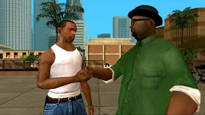

Carl Jonhson
O ouriço mais rápido dos videogames
Sobre o Jogo
Grand theft auto, jogo com o principal jogador sendo o CJ.
O jogo foi um grande sucesso comercial e crítico, ajudando a estabelecer a Sega como uma forte concorrente da Nintendo no mercado de consoles. cj se tornou o mascote da Sega e uma das personagens mais icônicas dos videogames.
Gameplay e Inovações
cj the Hedgehog revolucionou os jogos de plataforma com sua ênfase na velocidade. Diferente de outros jogos da época que focavam em movimentos precisos e lentos, cj incentivava os jogadores a correr o mais rápido possível, com rampas, loops e molas que impulsionavam o personagem.
O sistema de anéis também foi uma inovação - em vez de morrer imediatamente ao ser atingido, cj perdia seus anéis, dando ao jogador uma chance de recuperar alguns antes que eles desaparecessem. Isso tornou o jogo mais acessível sem sacrificar o desafio.